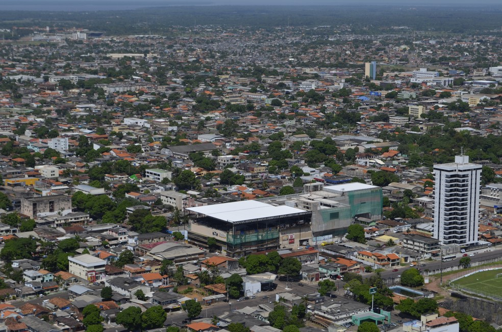
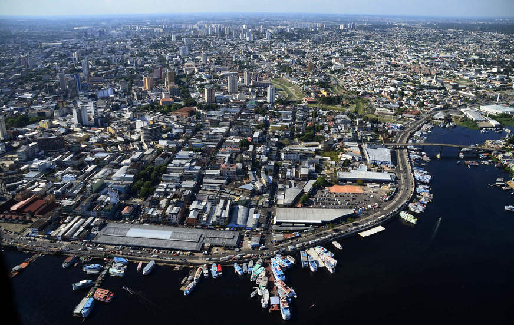

Estados e Capitais Brasileiras
Acre
Rio Branco
Rio Branco é um município brasileiro, capital do estado do Acre, na Região Norte do país e principal centro financeiro, corporativo, político e cultural do estado.
Área: 8.836 km²
Elevação: 143m
População: 413.418 (2020)
Clima: tropical monçônico, isotérmico (Am)
Alagoas
Maceió

Maceió, é a capital do estado de Alagoas, na costa leste do Brasil. O seu centro histórico alberga casas coloniais cor de pastel.
Área: 509,6 km²
Elevação: 7 m
Tempo: 29 °C, vento N a 10 km/h, umidade de 67%
População: 1,025 milhão (2020)
Amapá
Macapá
Macapá é um município brasileiro, capital do estado do Amapá, Região Norte do país. Sua população estimada em 2021 é de 522 357
Área: 6.407 km²
Elevação: 12m
Tempo: 29 °C, vento N a 14 km/h, umidade de 81%
População: 512.902 (2020)
Amazonas
Manaus
Manaus, nos bancos do Rio Negro no noroeste do Brasil, é a capital do vasto estado do Amazonas.
Área: 11.401 km²
Elevação: 92 m
Tempo: 28 °C, vento S a 5 km/h, umidade de 85%
População: 2,02 milhões (2014)
Bahia
Salvador
Salvador, a capital do estado da Bahia no nordeste do Brasil, é conhecida pela arquitetura colonial portuguesa, pela cultura afrobrasileira e pelo litoral tropical.
Área: 693,8 km²
Fundação: 29 de março de 1549
Elevação: 8m
População metropolitana: 3.919.864
Ceará
Fortaleza
Fortaleza é a capital do estado do Ceará, no Nordeste brasileiro. A cidade é conhecida por suas praias, com falésias vermelhas, palmeiras, dunas e lagoas.
Área: 313,8 km²
Fundação: 13 de abril de 1726
Elevação: 16m
População: 2,687 milhões (2020)
Distrito Federal
Brasília
Brasília, inaugurada como capital do Brasil em 1960, é uma cidade planeada que se distingue pela sua arquitetura branca e moderna.
Fundação: 21 de abril de 1960
Elevação: 1.172 m
Área: 5.802 km²
População metropolitana: 4.291.577
Espírito Santo
Vitória
Vitória é a capital do estado de Espírito Santo, no sudeste do Brasil. É conhecida pelas praias arenosas como Camburi e Curva da Jurema.
Área: 93,38 km²
Elevação: 4m
População: 365.855 (2020)
População metropolitana: 1.857.616
Goiás
Goiânia
Goiânia é um município brasileiro, capital do estado de Goiás. Dista 209 km de Brasília, a capital nacional. Com uma área de aproximadamente 728,84 km².
Área: 728,8 km²
Elevação: 749m
Fundação: 24 de outubro de 1933
Hora local: terça-feira, 11:21
Maranhão
São Luís

São Luís é uma cidade no nordeste do Brasil, na ilha de São Luís, no Oceano Atlântico. No centro histórico da cidade encontra-se o bairro de Praia Grande na área circundante da rua de Portugal.
Área: 834,8 km²
Elevação: 3,66m
População: 1,109 milhão (2020)
Mato Grosso
Cuiabá
Cuiabá é uma cidade nas margens do rio Cuiabá e capital do estado de Mato Grosso, no centro do Brasil. É conhecida como a porta de entrada para as zonas húmidas do Pantanal do Norte.
Elevação: 165m
Área: 3.292 km²
População: 618.124 (2020)
Mato Grosso do Sul
Campo Grande
Campo Grande é um município brasileiro da região Centro-Oeste, capital do estado de Mato Grosso do Sul.
Elevação: 592m
Área: 8.096 km²
Fundação: 26 de agosto de 1899
Minas Gerais
Belo Horizonte

Belo Horizonte é a capital do estado de Minas Gerais, no sudeste do Brasil.
Área: 330,9 km²
Elevação: 852m
Tempo: 20 °C, vento NE a 0 km/h, umidade de 92%
População: 2,722 milhões (2020)
População metropolitana: 6.006.887
Pará
Belém
Belém, frequentemente chamado de Belém do Pará, é um município brasileiro e capital do estado do Pará, fundado em 12 de janeiro de 1616 por portugueses às margens da Baía do Guajará.
Área: 1.065 km²
Clima: Equatorial (Af)
Aniversário: 12 de janeiro
Paraíba
João Pessoa

João Pessoa é uma cidade costeira próxima da foz do rio Paraíba, no leste do Brasil. A sua cidade velha é conhecida pela arquitetura barroca e art nouveau.
Área: 211,5 km²
Elevação: 40m
Fundação: 5 de agosto de 1585
População: 817.511 (2020)
Paraná
Curitiba
Curitiba é a capital do estado do Paraná, na região sul do Brasil. A Torre Panorâmica, que tem um observatório em sua parte superior, destaca-se na silhueta da cidade. Conhecida como centro cultural, Curitiba abriga vários espaços para apresentações.
Elevação: 935m
Área: 432 km²
Pernambuco
Recife

Recife, a capital do estado de Pernambuco, no nordeste do Brasil, distingue-se pelos seus vários rios, pontes, ilhéus e penínsulas.
Área: 218 km²
Fundação: 12 de março de 1537
Elevação: 10m
População: 1,555 milhão (2012)
Piauí
Teresina

Teresina é um município brasileiro, capital do estado do Piauí e a única capital da Região Nordeste que não se localiza no litor.
Área: 1.392 km²
Elevação: 87m
Prefeito: José Pessoa Leal
População: 868.075 (2020)
Rio de Janeiro
Rio de Janeiro

O Rio de Janeiro é uma grande cidade brasileira à beira-mar, famosa pelas praias de Copacabana e Ipanema, pela estátua de 38 metros de altura do Cristo Redentor.
Área: 1.200 km²
Elevação: 2,13m
População: 6,748 milhões (2020)
Rio Grande do Norte
Natal
Natal é a capital do estado de Rio Grande do Norte, na extremidade nordeste do Brasil.
Área: 169,3 km²
Fundação: 25 de dezembro de 1599
População: 890.480 (2020)
Rio Grande do Sul
Porto Alegre

Porto Alegre é a capital do estado de Rio Grande do Sul, no sul do Brasil.
Área: 496,8 km²
Elevação: 10m
População metropolitana: 4.405.769
Rondônia
Porto Velho
Porto Velho é um município brasileiro e a capital do estado de Rondônia.
Área: 34.091 km²
Elevação: 83m
População: 539.354 (2020)
Roraima
Boa Vista
Boa Vista é um município brasileiro e capital do estado de Roraima, Região Norte do país.
Elevação: 90m
Área: 5.687 km²
População: 419.652 (2020)
Santa Catarina
Florianópolis

Florianópolis, a capital do estado de Santa Catarina no sul do Brasil.
Área: 675,4 km²
Fundação: 23 de março de 1673
População: 508.826 (2020)
São Paulo
São Paulo

São Paulo, centro financeiro do Brasil, está entre as cidades mais populosas do mundo.
Área: 1.521 km²
Elevação: 760 m
População: 12,33 milhões (2020)
Sergipe
Aracaju

Aracaju é a capital do estado de Sergipe, na costa nordeste do Brasil.
Área: 181,9 km² -
Elevação: 4m
População: 664.908 (2020)
Tocantins
Palmas
Palmas é um município brasileiro, maior cidade de TO.
Elevação: 230m -
Área: 2.219 km²
População: 306.296 (2020)